Note
Hello, welcome to the SunFounder Raspberry Pi & Arduino & ESP32 Enthusiasts Community on Facebook! Dive deeper into Raspberry Pi, Arduino, and ESP32 with fellow enthusiasts.
Why Join?
Expert Support: Solve post-sale issues and technical challenges with help from our community and team.
Learn & Share: Exchange tips and tutorials to enhance your skills.
Exclusive Previews: Get early access to new product announcements and sneak peeks.
Special Discounts: Enjoy exclusive discounts on our newest products.
Festive Promotions and Giveaways: Take part in giveaways and holiday promotions.
👉 Ready to explore and create with us? Click [here] and join today!
Fun7 Tap on The Black Tile
Many of you are familiar with the popular mobile game where players tap on the black tiles to score points while avoiding the white tiles. We’re bringing this addictive challenge using two obstacle avoidance modules. When your hand is blocked over one of the IR modules, a tap is registered on the stage.
If a tap lands on a black tile, you score a point; tapping a white tile deducts a point. Players must decide quickly whether to tap over the left or right IR module based on the position of the black tiles.
Below are the steps for implementing the project. It is recommended to follow these steps initially, and once familiar, you may modify the effects as desired.
1. Paint a Tile sprite
A Tile sprite is used to achieve the effect of alternating black and white tiles moving downward; in the cell phone version of this game, there are generally 4 columns, here we only do two columns.
Delete the default sprite, tap on the Add Sprite icon, select Paint.
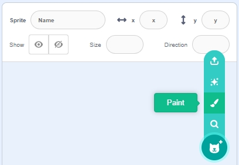
Next, go to the Costumes page and use the Rectangle tool to draw a rectangle with a gray border and white fill.
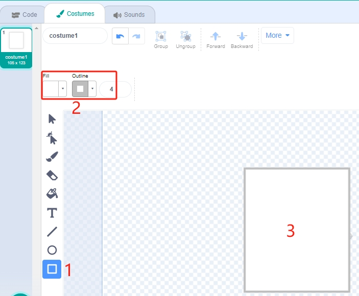
Select the rectangle and click Copy -> Paste to make an identical rectangle, then move the two rectangles to a flush position.
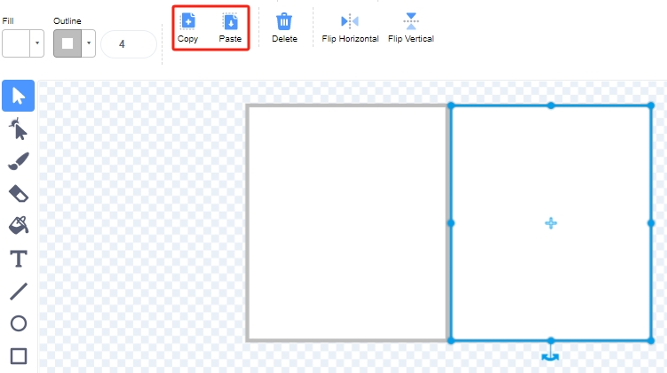
Select one of the rectangles and choose a fill color of black.
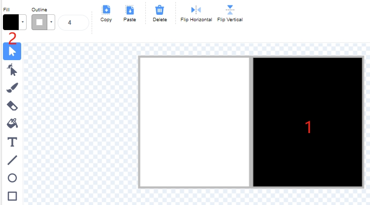
Now select both rectangles and move them so that their center points match the center of the canvas.
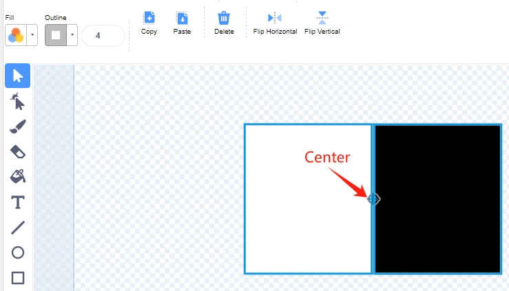
Duplicate costume1, alternating the fill colors of the two rectangles. For example, the fill color of costume1 is white on the left and black on the right, and the fill color of costume2 is black on the left and white on the right.
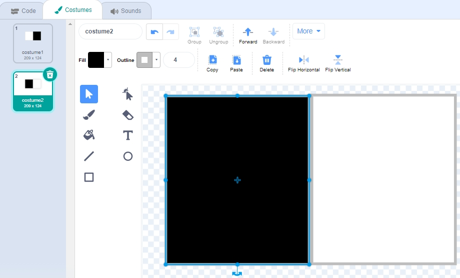
Return to the Code page and set the sprite’s name to Tile.
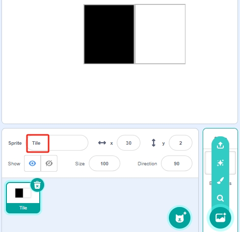
{kind=link}
{kind=link}
{kind=link}
{kind=link}
{kind=link}
2. Scripting the Tile sprite
First, set the initial position of the Tile sprite so that it is at the top of the stage.
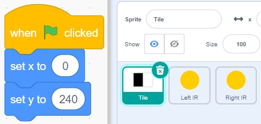
Create a variable - blocks and give it an initial value to determine the number of times the Tile sprite will appear. Use the [repeat until] block to make the variable blocks gradually decrease until blocks is 0. During this time, have the sprite Tile randomly switch its costume. After clicking on the green flag, you will see the Tile sprite on the stage quickly switch costumes.
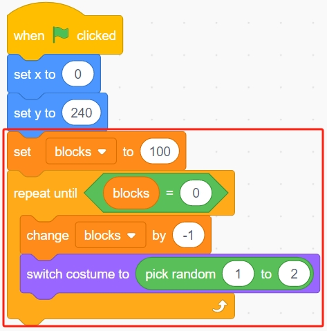
Create clones of the Tile sprite while the variable blocks is decreasing, and stop the script from running when blocks is 0. Two [wait () seconds] blocks are used here, the first to limit the interval between Tile’s clones and the second is to let the variable blocks decrease to 0 without stopping the program immediately, giving the last tile sprite enough time to move.
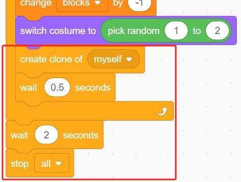
Now script the clone of the Tile sprite to move down slowly and delete it when it reaches the bottom of the stage. The change in the y coordinate affects the drop speed, the larger the value, the faster the drop speed.
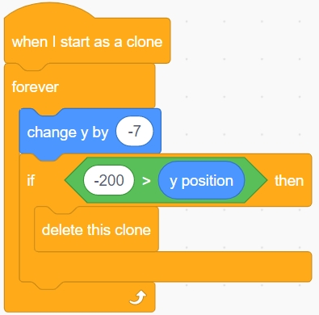
Hide the body and show the clone.
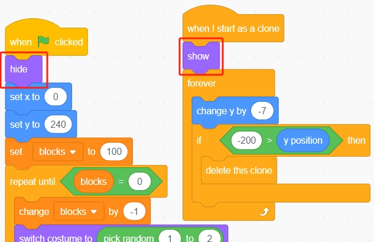
3. Scripting the backdrop
In the backdrop, read the values of the 2 IR modules and make the corresponding actions.
When the green flag is clicked, set the variable count to 0.
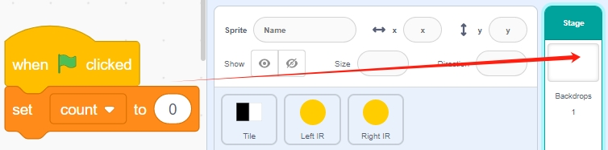
If the left IR obstacle avoidance module senses your hand, broadcast a message - left.
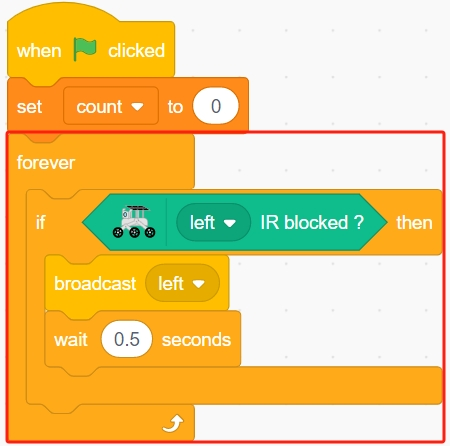
If the right IR avoidance module senses your hand, broadcast a message - right.
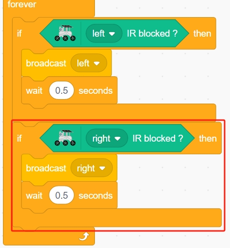
{kind=link}
4. Paint Left IR sprite
A Left IR sprite is used to achieve the click effect; when the left IR module senses your hand, it will send a message - left to Left IR sprite, letting it start working. If it touches the black tile on the stage, the score will be increased by 1, otherwise, the score will be decreased by 1.
Again, tap on the Add Sprite icon and select Paint.
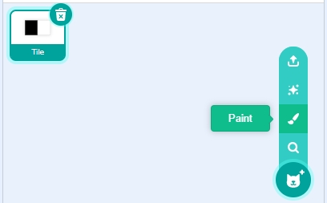
Go to the Costumes page, select the fill color (any color out of black and white) and draw a circle.
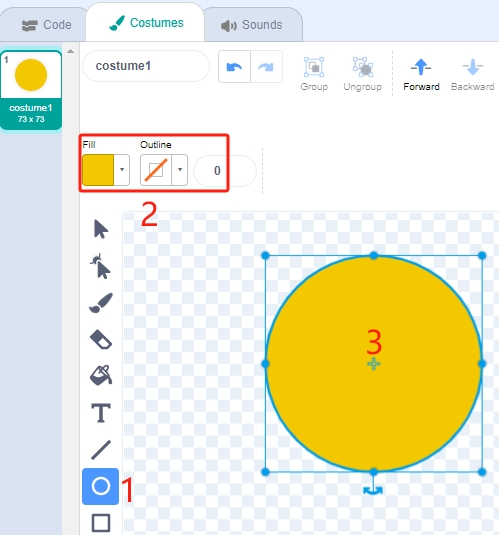
Return to the Code page and change the sprite’s name to Left IR.
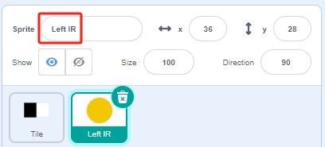
5. Scripting the Left IR sprite
Now start scripting the Left IR sprite. When the green flag is clicked, first hide the sprite.
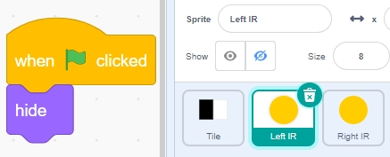
When the message - left is received (the IR receiver module on the left detects an obstacle), show the sprite, set its size to 100%, and then shrink it at intervals of 10 using a [Repeat] block before hiding it again. This gives the sprite an effect of expanding and contracting.
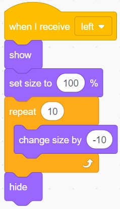
Then determine if the black block of the Tile sprite is touched, and if it is, let the variable count increase by 1, otherwise decrease by 1.
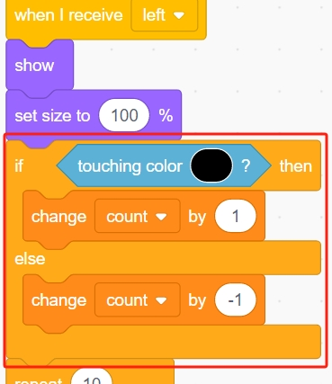
Note
You need to make the Tile sprite appear on the stage, and then absorb the color of the black block in the Tile sprite.
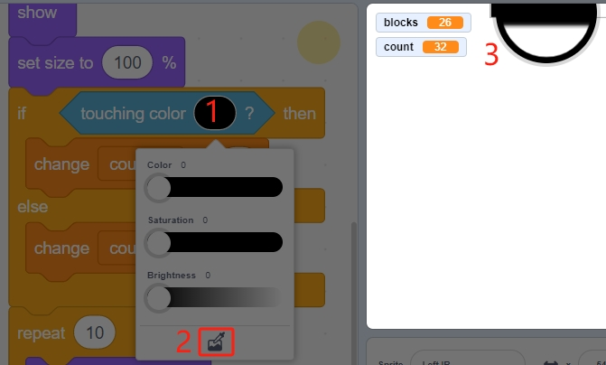
6. Right IR sprite
The function of Right IR sprite is basically the same as Left IR, except that it receives Right information.
Now duplicate the Left IR sprite and change the sprite’s name to Right IR.
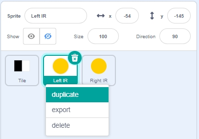
Then change the received message to - right.
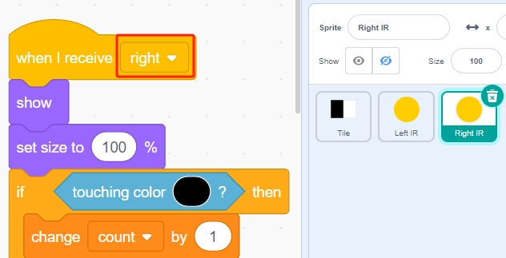
7. Running the Script
Now adjust the positions and sizes of the three sprites.
Drag the Tile sprite to the bottom of the stage and set its x position to 0.
Move the Left IR sprite into the left frame. You need to go to the Costumes page to reduce the sprite’s size to only 50% of the frame’s size.
Similarly, move the Right IR sprite into the right frame. You need to go to the Costumes page to reduce the sprite’s size to only 50% of the frame’s size.
Make sure that the Left IR and Right IR sprites are above the Tile sprite.
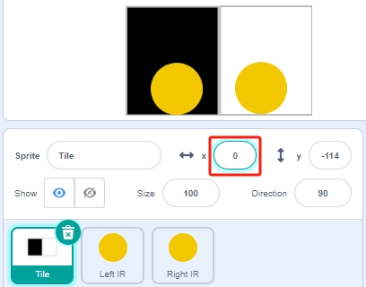
Now all the scripting is done, and you can click on the green flag to run the script.